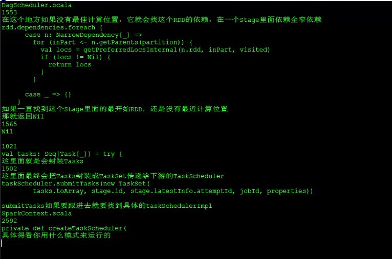
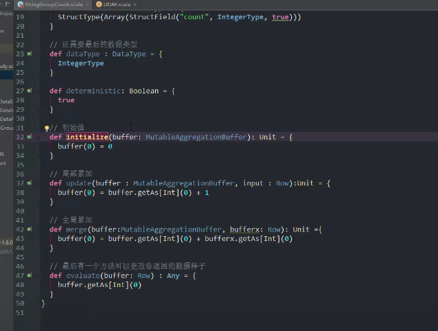
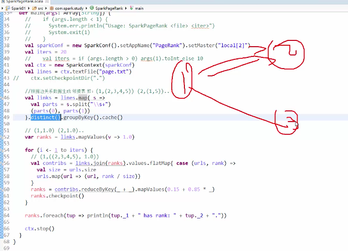

Hadoop系列五：Spark基础
简介
- 伯克利大学实验室研发，为机器学习的快速计算而设计
- DataAnalytics Stack
Mesos: 相当于Yarn，Mesos是粗细粒度，Yarn是粗粒度的。Mesos比Yarn效率更高一些
HDFS:分布式文件系统Mesos是C++开发，Yarn是Java开发
Tachyon:内存文件系统，百度用的比较多
Spark Core/MR Storm
SPark SQL(Hive),MLLib(Mahout) ,Spark Streaming
支持3种API
- scala很好
- python不错
- java也不错
4种模式
- Local 多用于测试
- standalone:独立的搭建，独立与hadoop
- mesos
- yarn：中国用的最多
回顾MR
每个Map对应一个split，每个split大小（split_max/min Block Size）大小与BlockSize相同。大小在3×128MB～4×128MB
右边3个ReduceTack
buffer in memory是100MB，80%溢写
map在写到缓冲区之前进行patition：哈希模运算，hash(key)%3
溢写过程中，sort排序然后溢写到磁盘，每一溢写
merge将这些小文件合并
reduce端，来fetch拉去数据。reduce端将从各个map拉取来的数据进行sort排序合并成一个。merge完之后进行Group分组，分了多少组就会被调用多少次。
MR慢的原因：
1. 太多的磁盘IO:spill to dist,merge合并,fetch,sort,output
2. 大量的排序：强制的加入的排序-->为了分组。使进入rudece函数的key相同。
map端的排序缓解reduce端压力
排序是归并排序
3. shuffle阶段spark也避免不了，主要是每次Job的输入输出。
4. hdfs如何知道机器的框架？不知道,配置的。
Spark快的原因
1.内存计算
hdfs读取，每次迭代放内存里，不够时也会放在磁盘里（配置）。
2.DAG优化
sparkCore
RDD
（Resilient Distributed Dataset）弹性分布式数据集
特性
- a list of partitions(n篇数据,固定在某节点里:某个节点里的某块连续数据):一般是一个hdfs的block对应一个partitions，一般遵循数据的本地性。
- a function for computiong each split（partitons=split从数据角度，mr的切割，算子：map、filter,persist）
- a list of dependencies on other RDDS(不同算子将RDD变成不同的RDD，用于重新计算，内存中RDD不稳定缘故，出现宕机会重算)
- Optionly, a Partitioner for key-value RDDS（可对RDD重新分区，增加并发）
Optionly, a list of preferred locations to compute each on（一个期望的位置去计算，数据本地性，如hdfs3个备份，3个节点都是期望的计算位置）
第四、五个每种rdd可以有也可以没有
RDD容错
- 重新算
- persist
- checkPoint
术语解释
- application
sparckContext,包含driver，和集群上的executor - Driver:
DAGScheduler
TaskScheduler - clusterManager
在集群上获取资源的外部服务，例如standalone，memos，yarn - worker Node
运行代码的节点 executor（containnor）
在worker上为某应用程序启动的一个进程
每个应用程序都有各自独立的executorsjob
包含多个task的并行计算，每个action- stage
一个job根据宽依赖切割成的stage - task
每个executor执行的最小单元
调度概览
运行时
每个application都有一个Dirver进行调度，它将job分成task，交给各个节点去运行，并收集返回result，输出结果。
流程示意图
- 加载数据集
RDD转换，算子操作
- transformations延迟执行
2.action触发执行，立即执行
- transformations延迟执行
实例
lines.sc.textFile(“filepath”):加载文件，成为RDD
errors = lines.filter(_.startWith(“ERROR”))：filter是transformation转换
errors.persis():缓存RDD
Mysql_errors = errors.filter(_.contain(“MySQL”)).count()：action执行
— job0Http_errors = errors.filter(_.contain(“Http”)).count();
— job1spark每次碰到acion把之前的运输封装成job，去执行。job0与job1是串行执行的？FIFO策略，Fair是并发执行
rdd其实是一个内存里一个瞬时的状态，以job0为例
若不持久化，job1会重新从hdfs中读数据，所以需要persist一下。
rdd复用时，需要持久化persist
持久化策略
StorageLevel
1.磁盘 2.内存 3.使用JVM的堆，4.不序列化，4.副本数
memory_only：默认
memory_only_ser:序列化占内存少一点
MEMORY_AND_DISK，disk指的是本地磁盘，而不是hdfs，意思为先存内存，内存不够存磁盘。若运算时间超过读取时间，还是读取合适，反之应该计算。
读取时间 trade off 运算时间
一般当rdd被复用时，持久化对象
当数据做一定的容错使用_2
序列化
- 情况：
主从
_SER
shuffle网络传输 - 配置
conf.set(“saprk.serialzer”,”org.apache.spark.serialzer.Kryoserializer”)
搭建
单机模式
./bin/spark-submit --class org.apache.spark.examples.SparkPi --master local[*] ./lib/spark-examples-1.6.3-hadoop2.4.0.jar 100
standalone集群模式
配置文件
- slaves
node2
node3 - spark-env.sh
export JAVA_HOME=/usr/java/jdk1.8.0_151
export SPARK_MASTER_IP=node1
export SPARK_MASTER_PORT=7077
export SPARK_WORKER_CORES=1 :一个cpu线程
export SPARK_WORKER_INSTANCES=1 ：一个物理节点里只有一个worker进程
export SPARK_WORKER_MEMORY=1g ：物理节点内存
启动
./sbin/start-all.sh
测试
访问
node1:8080
样例
./bin/spark-submit –class org.apache.spark.examples.SparkPi –master spark://node1:7077 –executor-memory 1G –total-executor-cores 1 ./lib/spark-examples-1.6.3-hadoop2.4.0.jar 100
2种运行模式
- client：在shell中可见，就在Driver上执行
- cluster:在浏览器客户端访问，在worker上执行
./bin/spark-submit –class org.apache.spark.examples.SparkPi –master spark://node1:7077 –deploy-mode cluster –executor-memory 1G –total-executor-cores 1 ./lib/spark-examples-1.6.3-hadoop2.4.0.jar 100
HA的配置
spark_env.sh
export SPARK_DAEMON_JAVA_OPTS=”-Dspark.deploy.recoveryMode=ZOOKEEPER -Dspark.deploy.zookeeper.url=node1:2181,node2:2181,node3:2181”
复制到各个节点机
并在node2上，将master改为node2启动zookeeper
- 启动spark
- 在node2上启动start-maseter.sh
- 查看ndoe1:8080与node2:8080
- 测试
kill掉node1上的master，从8080上看，是否可以切换。 - shell测试
./bin/spark-shell -master spark://node1:7077
Yarn集群模式
- yarn访问8088
配置spark-env.sh
1 | xport HADOOP_CONF_DIR=/home/hadoop-2.5/etc/hadoop |
测试
- 注意，此处无需启动，yarn的source Manager就代替了master,node manager代替worker
启动zookeeper(./zkServer.start),hadoop(start-all.sh)
client模式
./bin/spark-submit –class org.apache.spark.examples.SparkPi –master yarn-client ./lib/spark-examples-1.6.3-hadoop2.4.0.jar 100cluster模式
./bin/spark-submit –class org.apache.spark.examples.SparkPi –master yarn-cluster ./lib/spark-examples-1.6.3-hadoop2.4.0.jar 100
spark在yarn下的调度
由driver分配任务，然后从resourceManager申请资源，ResourceManager返回NodeManager，driver再与NodeManager通信，NodeManager分配Containor给Driver，Driver分配Task到Containor中运行。
这里Driver充当的是ApplicationManager的角色，MR ON YARN也是如此。
【重点】调度源码分析
概览
spark-submit –> Driver进程 –> SparkConext –> 创建2个对象DAGScheduler/Taskduler
Tasksheduler会通过它对应的一个后台进程，去连接Master，向Master注册Application
Master –> worker –> executor –> executor会反向注册到TaskScheduler
这就完成了SparkContex的初始化，继续代码运行。
DAGSheduler –> Job切割成Stage(使用堆由底切割，由头运行) –> stage切割成task放在taskSet中交由TaskScheduler
TaskScheduler会找到出每个Task的preferLocation，然后提交到executor进行运行
代码

问题
如何知道的知道的location
【重点】宽窄依赖及DAG（有向无环图）

- 这里stage3中有3个task，因为在stage3的reduce端从map端的partition去取数据，然后进行运算。
- 为什么有A–>B阶段：因为要减少多机到多机的shuffle，否则出错重算代价高
区别
有shuffle就是宽依赖，多机到多机的传递
窄依赖没有通过网络传递数据:数据本地性原则
用处
用于切割Job
Driver可以认为是一个application（应用程序），见到action则划分一个job
job也需要跑在分布式上，job会根据宽依赖来切割为stage
是基于数据本地性的切割
一个stage内的窄依赖进行pipleline操作：每条线都是一个pipleline,每个pipleline都是一个task，即每个stage都有多个task组成，task是最小的运算单元
尽量避免shuffle：多机到多机依赖高，容易出错，每次错误，都需要重新算
为什么会有B？
将7到3化分为3×3，4×3
并行度
- 数据并行【任务并行度】度其实就是task的数量，就是一个rdd中有多少个partition：RDD中的partition为计算最小单位
资源并行度可以认为是支持的executor×线程数。
一般rdd数据是资源并行度的2-3倍
local[2] sc.parallelize(names, 4);node
spark_worker_instances:节点上跑几个workerworker
spark_worker_memory
worker上跑多少进程executor
spark_executor_memory写代码时，需要对集群中的资源并发度情况有数，才能对任务并发度进行控制。
【重点】算子
转换算子与操作算子

- 对RDD的操作都是在从节点中执行
- 由于不是在一台机器，RDD匿名类中访问外部的变量，都需要变成final
详解
map
map是对集合内所有数据进行逐个操作mapPartitions
也是map，就是一次处理一个partition的数据
注意driver中的数据需要是final才能传递给executor去执行mapPartitionsWithIndex
这个可以拿到每个partition的indexmap2Pair
对键值对进行mapflatmap
flatmap = map + flat
对rdd中的数据逐个进行处理，处理完的结果是序列，然后把这些每个结果的序列合并在一起。
flatmap 与map都是逐个对元素进行处理，不同之处在于：map处理完之后返回仍然是单个元素，即：map是一到一的操作，flatmap处理完之后返回是一个集合，即flatmap是一到多的操作filter
过滤coalesce算子合并
fiter之后使partitions中的数据不平均，可能造成数据倾斜
用coalesce减少一下partition，减少数据倾斜的症状
coalesce中的shuffle参数
可以是true，这种情况下，可以用于partition个数的增多。repartition
经典场景，是增加并发度collect
collect是将全部数据返回到driver端去执行，容易内存溢出
foreach是在worker节点打出count
groupByKey
groupByKey是将key相同的数据，value合并成一个序列。
rdd数量与上游rdd数量相同
但如果设置了conf.set(“spark.default.parallelism”, 5)shuffle时就执行会读取默认的，5个.
key值为3个，10个partition，如何分？取模，key并没有被分到同一个reduce上
groupByKey算子可以传参,决定shuffle的reduce阶段的partition的并发（reduce个数）reduce（action）
算子里的逻辑在从节点，但结果在driver端。reduce本身是在driver端，但里边的逻辑是executor中执行。reduceByKey=groupByKey + reduce
spark里的reduceByKey在map端自带combiner(map端的partition中，局部进行累加)
效率高过 单步的groupByKey + reduceaggregateByKey
平均不能直接用reduceByKey来做，因为其自带combiner，局部的平均会使总体的平均错误。
aggregateByKey可以分别指定map端与reduce端的操作
第一参数是，每个key值的初始值
第二参数是 Seq Function,如何进行shuffle map-side的本地聚合
第三参数是 如何进行shuffle reduce-side的全局聚合Sample
随机采样smple(withReplcement:Boolen, fraction Double),第一参数是否可重复采样。Take(action)
取前n个，然后变成一个listtakesame = smple + take
union
2个rdd的partition合并在一起dinstinct（shuffle）
去重sortByKey
按key升序排序，false参数是倒叙SaveAsTextFile
存到本地或者hdfs上，hdfs，9000端口是完全分布式，8020是高可用intersection
2个rdd元素取交集，还可以去重cartesian
2个rdd元素的笛卡尔积，排列组合CountByKey=Count + GroupByKey（action）
每个key对应的cout得出cogroup
将两个rdd的可以相同的合并到一起，这两个rddvalue值不同，形成2个序列作为值。join
将key相同两个rdd，value进行笛卡尔积
其他
- textFile读取时并发情况
textFile函数第二个参数有最小partition的设置,min(设置，资源并行度)
从local读基本依据最小partition
从hdfs默认有多少个block就有多少个partition - 从代码看stage的划分
实例：
WorldCount
- 匿名内部类
pi代码
topN
sort + take
groupTopN
groupByKey
mapToPair,在此处进行排序，并取N
forEach输出即可
二次排序
第一列相同，比较第二列
都需要自定义key
效率
共享变量
- 简介
算子会每个task都会封装共同的变量，这样效率低
共享变量会使数据每个executor中共享 - 广播变量
hadoop里的conf会广播出去 - 累加器accumulators
并行累加，是global的，在driver端进行计数
sparkContext.accumulator(v)
在从节点中无法读到 - 这里可以通过sleep来看ui（4040）
SparkSQL
复习
sparksql是建立在sparkCore基础上的，在rdd与各个数据存储之间通过dataframe来建立关联，使处理起来更容易。
Architecture of Spark SQL
DataFrame可以理解为一张表
SparkSQL底层
sqlParser(解析器),Analyzer（分析器）,Optimizer（优化器）
SparkSQL旧版本就是Shark
scala的隐式转换
隐式方法
scala可以通过声明为implicit的函数，将一个类对象转变为另一个类对象
隐式参数
参数的传入也可以隐式的规定
implicit val signPen = new SignPen();
def signForExame(name:val)(implicit signPen:SignPen)
类似于C的全局变量
【重点】DataFrame
简介
与RDD类似，也是一个分布式数据容器，但更像传统数据库的表格，除了数据以外，还掌握数据的结构信息，及schema
存储时，列式存储：方便分析，以列为单位方便统计，不需要加载其他列。
操作
parquet:是本地的列式存储文件
- load:读取内建文件
- save:保存内建文件
第一个参数：文件名
第二个参数：
SaveMode.ErrorIfExists
SaveMode.Ignore（文件存在就不存了）
SaveMode.Append（同一路径可以追加）
SaveMode.Overwrite - format(“json”):指定保存，读取的格式
RDD与DataFram反射互转
- createDataFrame(RDD, .class)
- registerTempTable(“table.name”)【临时表】
- DataFrame.toJavaRDD()，转成RDD
- Row.getAs(“列名”)
RDD与DataFrame动态转换
- 创建JavaRDD
<Row> - 创建schema:StructType–>DataTypes.createStructType(fields)–>List
<StructField> - createDataFrame
- registerTemTable
应用：
有些时候不确定哪些列，需要从配置文件等地方读出来
【重点】数据源
Json
Json读取的2种方法
Json2DataFrame
DataFrame2RDD
RDD算子Join
RDD2DataFrame
DataFrame2Json
完成了从Json到Json的变化
jdbc
步骤
spark的思想都是lazy的，读取的时候并不会读，操作时才会
jdbc 2 DataFrame
DataFrame 2 RDD
RDD join map filter
RDD 2 DataFrame
DataFrame 2 RDD map 2 insert to jdbc// 数量大时Mysql扛不住，后边说修改
测试
- 需要将mysql的jar包放到spark上
lib放到spark的lib下 - cluster模式需要配置spark-env.sh
- yarn模式需要在spark-defaults.con配置【大一统】
配置classpath，driver以及executor con
yarn 8088standalone client
./bin/spark-submit –master spark://node1:7077 –class com.sun.spark.JDBCDataSource ./sparksql.jarstandalone cluster
hadoop fs -put sparksql.jar /
./bin/spark-submit –master spark://node1:7077 –deploy-mode cluster –class com.sun.spark.JDBCDataSource ./sparksql.jaryarn client
./bin/spark-submit –master yarn-client –class com.sun.spark.JDBCDataSource ./sparksql.jaryarn cluster
./bin/spark-submit –master yarn-cluster cluster –class com.sun.spark.JDBCDataSource ./sparksql.jar
Hive
搭建
- 把hive里边的hive-site.xml放到spark/conf目录下
- 启动hive
- 启动Mysql
- 启动HDFS
- 初始化HiveContext
- 打包运行
步骤
hive的操作更像sql，不需要注册临时表，可以直接使用
Create Table
Load
select c1,c2,c3 from t1 join t2 on t1.c1=t2.c1 where t1.c2>80
DataFrame.saveAsTable
./bin/spark-submit –master spark://node1:7077 –class com.shsxt.study.sql.HiveDataSource ./sparksqlhive20161202.jar
其他
spark-submit参数
–supervise(重试)
–executor-memory MEM :memory for executor
–executor-cores NUM: Number of cores(thread) pre executor
Yarn
–num-executors NUM:直接告诉有多少线程
– yarn cluster时需要3个包，–jars
– yarn中默认执行2次
开窗函数（分组TopN）
- 就是使用SparkSQL来做到分组取TopN
- row_number() OVER(PARTITION BY category ORDER BY revenue DESC) rank
- 只对Hive有用，不好测，需要大家Hive来测试
- sparksql模式并行度200
相当于设置conf.set(“spark.default.parallism”,”200”)
一开始读的时候取决于block，但经过shuffle后，会变成200
UDF
=>代表匿名函数,括号里边是输入，Int是输出
1 | sqlContext.udf.register("strlength", (str:string) => str.length+10)) |
UDAF(多个进,返回一个)
函数 def 【def 函数名（val 形参名：形参类型）:输出类型={ 函数体}】
类 class
对象 obj
变量 var val
sqltext.udf.register(“strGroupCount”,new StringGroupCount)
// 输入类型
class StringGroupCount extends UserDefinedAggregateFunction{
def inputSchema:StructType={
}
}
// 中间结果类型
// 最后的类型
// 局部累加（相当于combiner）update
// 全局累加(相当于reduce)merge
// 返回类型evaluate()

【重点】实例：
pageRank
split(“\s+”)，多个空格切分
mapValue方法，键不变对值进行操作
case(urls,rank)是一个匹配，如果是键值对形式走这个函数体，反之不走
urls.map是
可以算出最重要的节点
- action
action前有太多的for循环太多，会是DAG太大 - 将数据checkpoint到磁盘，
- 效率低

SparkStream
复习
DStream的算子操作类似与rdd算子操作，不同之处它们的数据来源不太相同，DStream来自流
简介
流处理与批处理
流处理像楼梯，批处理像电梯（攒数据）sparkStream是微流处理
准实时，延迟要求不高
im.qq.com
天猫双十一 JStorm
春运实时迁徙
延迟为秒级，storm是毫秒级其他流处理框架
storm /Trident(storm来的) / Spark Stream / Flink 流spark Stream 架构

数据被封装为DStream，以时间切割为RDD
DStream也有很多算子，相当于于将算子应用到每个RDD上，再应用到每个元素上
DSteam是流，没有大小，只有时间// yum install nc
// nc -lk 8888JavaReceiverInputStream 会占有一个execotor,local[2]至少为2才可以
wordcount
HDFS数据源
- 从HDFS读数据
JavaDStream<String>lines = jssc.textFileStream(“hdfs://node2:8020/wordCount_dir”)
从hdfs文件夹下读取数据，只要有文件进来就计算
这里没有receiver 所以local可以为1 - 数据结果保存
synchronized 锁 - 优化
foreachRDD
连接池
算子
- updateStateByKey
每次记住上次的结果，在上次结果之上进行累加
RDD1:(K1,V1)
RDD2:(K1,V2) (K1, V1+V2)
必须要做checkPoint - transform
可以对RDD进行操作，在里边可以进行任何的算子操作，返回一个RDD即可
存储
kafka
简介
kafka是一个分布式消息队列，先将数据打到卡夫卡中，SparkStream从卡夫卡中取数据
其实用于缓存流数据修改conf/server.properties
kroker.id=0[第一台为0，2台为1]
log.dirs=/kafka-logs[往卡夫卡里放的数据，不能是临时的]
*num.partitions=1[topic 有多个partition组成 类似与RDD]
log.retention.hours=168[根据时间删除，过168小时删除]
zookeeper.connect=node1:2181,node2:2181,node3:2181bin下sh加执行权限
scp到其他节点即可
启动
nohup ./bin/kafka-server-start.sh config/server.properties > kafka.log 2>&1
标准错误也重定向到标准输出中测试
创建
./bin/kafka-topics.sh –create –zookeeper node1:2181,node2:2181,node3:2181 –topic 20180108 –partitions 2 –replication-factor 2
这个topic有2个partition
副本数2
元数据放在zookeeper中，数据放在卡夫卡集群显示
./bin/kafka-topics.sh –list –zookeeper node1:2181,node2:2181,node3:2181
./bin/kafka-topics.sh –describe –zookeeper node1:2181,node2:2181,node3:2181测试打数据
kafka-console-producer.sh
kafka-console-consumer.sh
./bin/kafka-console-producer.sh –broker-list node1:9092,node2:9092,node3:9092 –topic 20180108 进入交互，输入数据即可，指定节点
./bin/kafka-console-consumer.sh –zookeeper node1:2181,node2:2181,node3:2181 –topic 20180108 可以看到数据卡夫卡里的数据是键值对，val是我们存的值
两种读数据的区别
receiver
WAL 预写日志，将内存里的数据写到磁盘中
这种方式在读取不同的topic时，需要不同的receiver
Kafaka partion 不等于 RDD partition
Direct
需要人工指定消息队列里的offset
1.Kafka patition = RDD partition
2.不需要WAL，可以从kafka中重新读取
3.只计算一次，offset存在checkpoint中，第一种存在zookeeper
4.需要自己去控制offset